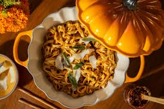

KIN-THUP
Business Plan
KIN-THUP noodles is rich in nutrients, low fat, provide energy and inexpensive. It benefits to increase the nutritional value of instant noodles. KIN-THUP noodles is rich in vitamins, minerals and antioxidants, it is incredibly healthy. Its nutrients and antioxidants may boost your immune system, protect eyesight, lower risk of certain cancers and promote heart and skin health. The word KIN means pumpkin and THUP means noodles.
If our business happen to run well in future, we have planned for international trade where farmers will be able to sell pumpkin which are the problems faced by the farmers and in other hand we will be able to earn maximum profit plus will be able to make trade relation with other countries.
Our business initially need to invest about Nu. 22 million to acquire non-current assets. To meet this finance we decided to take 67% 0f projected cost through loan and 33% of projected cost through issuing of equity shares to the public. In the first our business is expecting to generate profit about Nu. 14 million. In the second year we may generate about Nu. 23 million and in the third year we may generate or increase our profit about Nu. 32 million.
Pumpkin noodles which is now KIN-THUP, popped in our mind since most of the Bhutanese farmers are not able to sell pumpkin which is one of the problems. However, we took it as an business opportunity where those pumpkin can be converted to noodles. For more information contact to below: